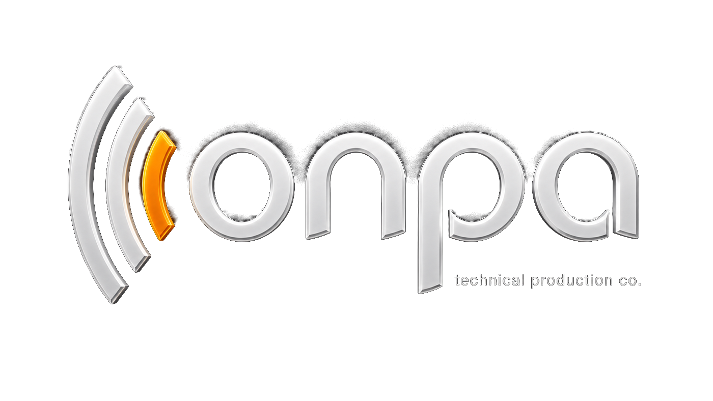
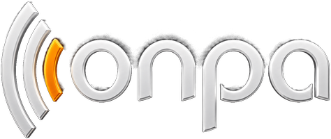
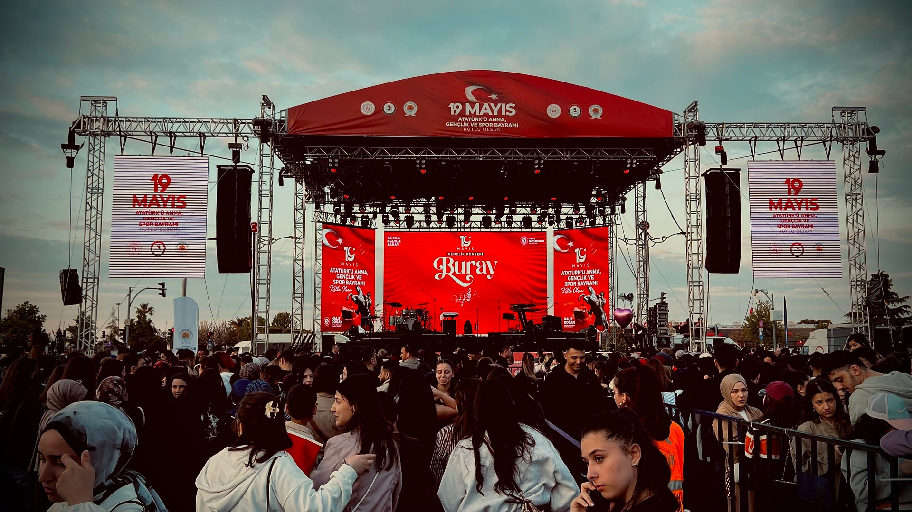
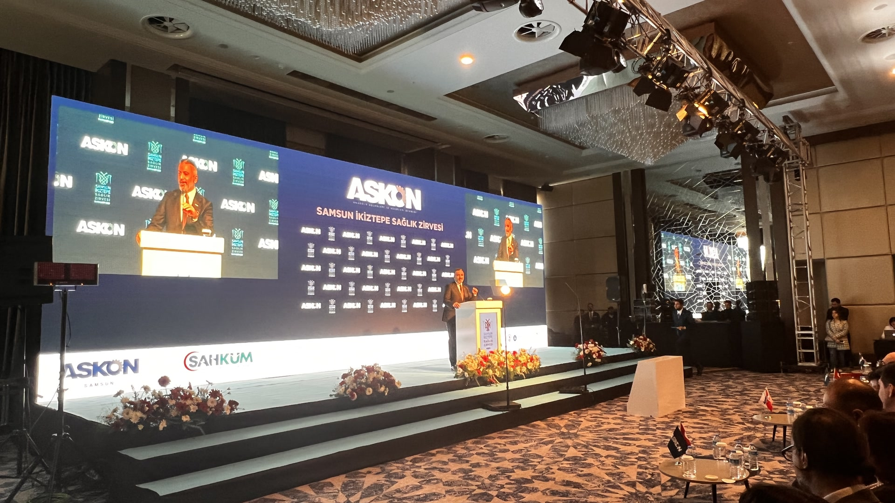
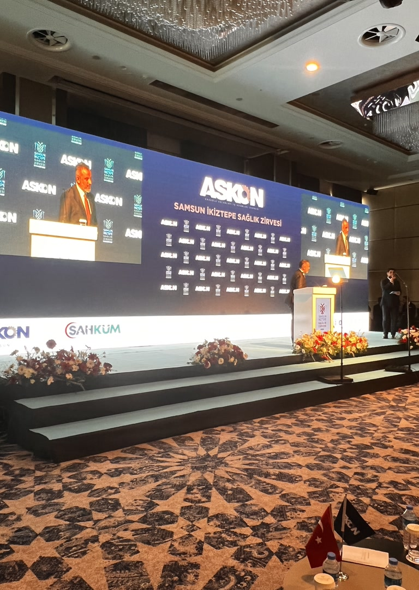
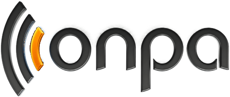
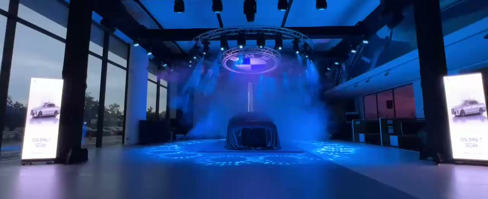
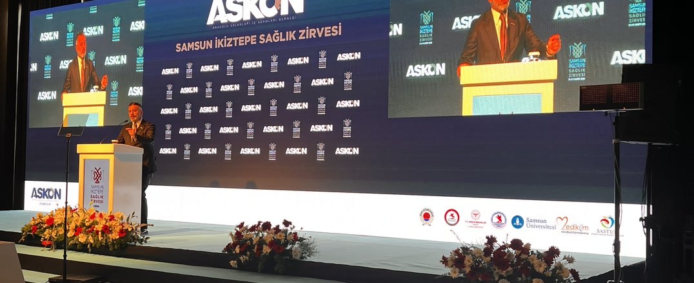
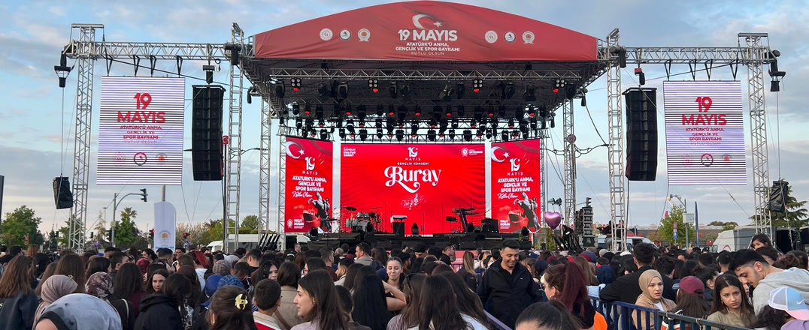

Kurumsal tanıtım · 2026

Sahne sizin, arkası bizde.
1995’ten beri ses veriyoruz · Samsun’dan Türkiye’nin her yerine
BMW i7
Yeni BMW iX3
Kosifler Oto
Lansman
Üç, iki, bir, örtü
Sis çekildi, i7 kaldı. Dün showroom, bu akşam sahne. Dairesel truss, mavi huzmeler ve marka ekranı aynı ana ayarlı.

Hakkımızda
1995’ten beri kablo sarıyoruz
Otuz yılı aşkın süredir salonları, meydanları ve sahneleri etkinliğe hazırlıyoruz. Ses, ışık, LED ekran, sahne ve truss kendi depomuzdan çıkıyor; kurulumu ve operasyonu kendi ekibimiz yapıyor.
Lansman ve gala
Sempozyum ve zirve
Konser ve festival
Samsun’dan Türkiye’ye

Rakamlar
Sayıyla söyleyelim
100+
etkinlik her yıl
30+
yıllık tecrübe
100 m²
LED ekran
100+
moving head

Hizmetler
Fişten ilk alkışa
Ses
JBL Vertec ve Audiofocus Ares 8 line array. Konferans için telsiz el, kürsü ve headset mikrofon.
Işık
100’den fazla beam, spot ve wash moving head. Konuşmacı ışığından konser şovuna.
LED ekran
100 m² modüler LED. Sahne arkası, yan ekran, sponsor yüzeyi.
Sahne ve truss
Modüler sahne, kürsü platformu, truss çatı ve portal.
Enerji
200 kVA mobil jeneratörle şebekeden bağımsız kurulum.

Kurumsal etkinlikler
Fark etmediyseniz, oradaydık.
İyi bir toplantıda kimse tekniği konuşmaz. Konuşmacı duyulur, sunum okunur, program saatinde akar.
Sempozyum · Sheraton Grand Samsun
Hekimlerden önce biz geldik
5. Karadeniz Romatoloji ve Ağrı Sempozyumu. Salon, ilk katılımcıdan önce hazırdı.
Kürsüde hekim, ekranda slayt
8–10 Mayıs, üç gün süren oturumlar. Kürsü mikrofonu ve LED ekran konuşmacıdan konuşmacıya aynı netlikte.
Zirve
Salon dolu, son sıra dahil
ASKON zirvesi. Sahne boyu LED ekran, kürsü ve dolu salona yeten ses.

Protokol toplantısı
Protokolde tekrar çekim yok
Kalabalık bir protokol toplantısı. Salon boyu LED ekran, ilk seferde doğru ses.
Davet
Son masa da davetli
Büyük bir salon daveti. Line array, LED ekran ve kürsü misafirlerden önce kuruldu.
Konferans sesi
Ses, deneme, bir, iki
Telsiz el, kürsü ve headset mikrofon. Konuşmacı hangisiyle rahatsa onunla.
Telsiz el mikrofonu
Kürsü mikrofonu
Headset mikrofon


LED ekran
Göremedim diyen kalmasın
100 m²
Yan ekranlarla sahne her masadan görünür. Sahne arkası, yan ekran ve sponsor yüzeyi.
Gala
Tavan yoksa truss var
Açık avluda kurumsal gala. Truss sahne kuruldu, sponsorlar LED ekranlarda yerini aldı.
Işık
Avizeler bu gece izinli
100’den fazla moving head. Beam, spot ve wash ile balo salonu konser sahnesine döner.
Festival
Aynı sahnede dünyanın adımları
56. Uluslararası Samsun Halk Oyunları Festivali. Truss çatı ve dev LED ekran.
Envanter
Hepsi bizim depodan
20
kabin JBL Vertec line array
16
kabin Audiofocus Ares 8 line array
100+
beam, spot ve wash moving head
200 kVA
mobil jeneratör
Süreç
İlk biz geliriz, son biz çıkarız
01
Keşif
Salonu yerinde görür, programı ve konuşmacı sayısını öğreniriz.
02
Proje
Ekipman listesi, yerleşim planı ve gerekirse 2D/3D çizim.
03
Kurulum
Etkinlikten önce, kendi ekibimizle.
04
Prova
Mikrofon, sunum ve geçişler konuşmacıyla birlikte denenir.
05
Etkinlik
Operatörlerimiz program bitene kadar salonda.
06
Söküm
Salon, aldığımız gibi teslim edilir.
Referanslar
Mikrofonu bize bırakanlar
BMW
Coca-Cola CCI
British American Tobacco
ASKON
Sheraton Otel
Kosifler Oto
Tüyap
Samsun Büyükşehir Belediyesi



İletişim
Arayın,
ses verelim.
Tarihi söyleyin, keşfe gelelim.
Telefon
0542 523 32 74
E-posta
bilgi@onpases.com
@onpases
Merkez
Samsun’dan Türkiye’nin her yerine